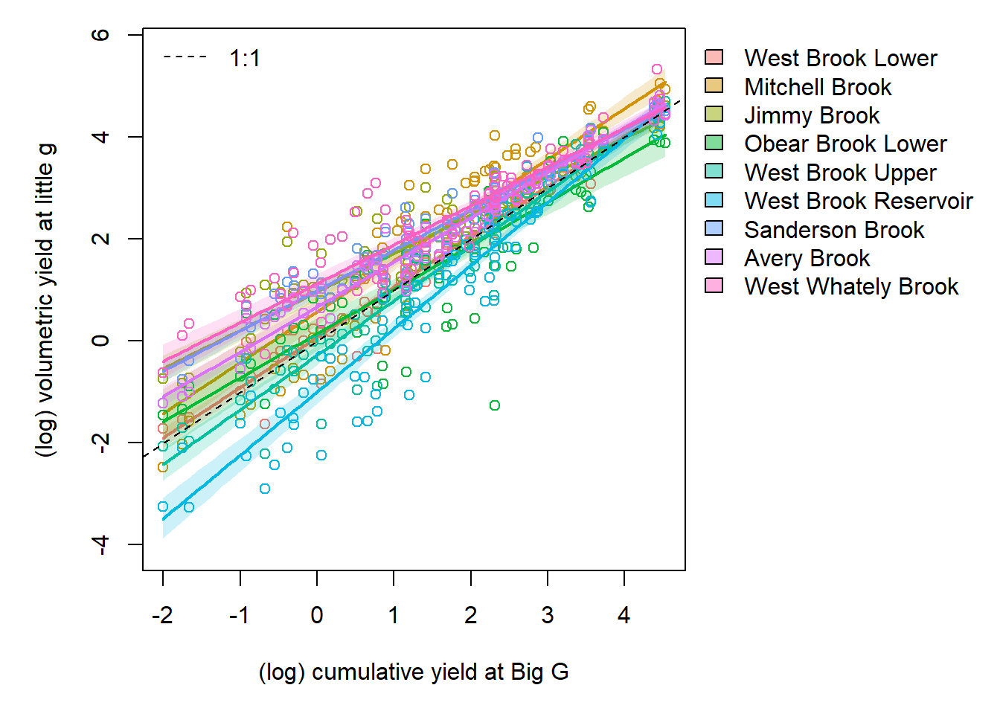

Purpose: Define the Wedge hypothesis and model in JAGS.
6.1 Q, H, A
Questions:
How does water availability (G) affect upstream diversity in streamflow regimes (g)?
How does streamflow diversity manifest as heterogeneity within and among locations in the upstream river network?
What are the relative contributions of within- and among-site diversity to the total streamflow diversity across the river network and does this change with water availability?
The Wedge Hypothesis: Among- and within-site diversity in g response to G drive spatiotemporal variation in flow across river networks
Among-site wedge: heterogeneity in physical characteristics among sites diversify little g response during low flows, but diversity in little g response attenuates (decreases) during high flows
Within-site wedge: within sites, variation in little g response to G is greater at low flows than at high flows
Additive diversity in the response of little g to Big G among and within sites drives total streamflow diversity across river networks
Approach
Break up data into manageable chunks using event/non-event delineation
Using Big G flow time series data, perform baseflow separation and event delineation to break up data into event and intervening non-event (baseflow) periods.
Apply Big G event/non-event periods to corresponding little g time series data and calculate (log) volumetric yield during each period for both G and g.
Using a Bayesian hierarchical model to account for site-level variation, model g ~ G, where g is (log) volumetric yield at little g and G is (log) volumetric yield at Big G during successive event/non-event periods.
Fit site-aware and site-agnostic models to describe within- and among-site diversity in g response to G, respectively.
Derive measures of observed and expected g variance dampening with increasing G under different assumptions regarding among- and within-site streamflow diversity
6.1.1 Conceptual diagram
The Wedge Hypothesis states that among- and within-site diversity in g response to G drive spatiotemporal variation in streamflow across entire river networks:
The Wedge Hypothesis - general
The hypothesis can be represented with a relatively simple hierarchical model:
The Wedge Hypothesis - parameters
From the fitted model, we can assess the relative contributions of within- and among-site diversity to total streamflow diversity across the river network and explore the extent to which this changes with water availability:
The Wedge Hypothesis - portfolio strength
6.2 Data
6.2.1 Site info and event data
Code
# site information and locationssiteinfo <-read_csv("C:/Users/jbaldock/OneDrive - DOI/Documents/USGS/EcoDrought/EcoDrought Working/Data/EcoDrought_SiteInformation.csv")siteinfo_sp <-st_as_sf(siteinfo, coords =c("long", "lat"), crs =4326)mapview(siteinfo_sp, zcol ="designation")
View relationship between Big G and little g, color by site, facet by event/non-event.
Code
dat %>%mutate(isevent = dplyr::recode(isevent, "1"="Event", "2"="Baseflow")) %>%ggplot(aes(x = yield_big_vol_log, y = yield_little_vol_log, group = site_name, color = site_name)) +geom_point() +geom_abline(intercept =0, slope =1, linetype ="dashed") +geom_smooth(method ="lm", se = F) +facet_wrap(~isevent)
Effect of (log) volumetric yield at Big G on (log) volumetric yield at little g during baseflow and event periods.
View relationship between Big G and little g, color by event/non-event, facet by site. For most sites (except may Obear Brook), G-g relationships are identical between events and non-event.
Code
dat %>%mutate(isevent = dplyr::recode(isevent, "1"="Event", "2"="Baseflow")) %>%ggplot(aes(x = yield_big_vol_log, y = yield_little_vol_log, group = isevent, color = isevent)) +geom_point() +geom_abline(intercept =0, slope =1, linetype ="dashed") +geom_smooth(method ="lm") +facet_wrap(~site_name)
Effect of (log) volumetric yield at Big G on (log) volumetric yield at little g during baseflow and event periods.
Plot derived G-g differences as a function of Big G yield, by site, facet by events/non-events.
Code
dat %>%mutate(diff = yield_little_vol_log - yield_big_vol_log, isevent = dplyr::recode(isevent, "1"="Event", "2"="Baseflow")) %>%ggplot(aes(x = yield_big_vol_log, y = diff, group = site_name, color = site_name)) +geom_point() +geom_abline(intercept =0, slope =0, linetype ="dashed") +geom_smooth(method ="lm", se = F) +facet_wrap(~isevent)
Effect of (log) volumetric yield at Big G on G-g difference (log volumetric yield) during baseflow and event periods.
Plot derived G-g differences as a function of Big G yield, color by events/non-events.
Code
dat %>%mutate(diff = yield_little_vol_log - yield_big_vol_log, isevent = dplyr::recode(isevent, "1"="Event", "2"="Baseflow")) %>%ggplot(aes(x = yield_big_vol_log, y = diff, group = isevent, color = isevent)) +geom_point() +geom_abline(intercept =0, slope =0, linetype ="dashed")
Effect of (log) volumetric yield at Big G on G-g difference (log volumetric yield) during baseflow and event periods.
6.3 Declare model
Based on results above, there does not appear to be any significant difference in the G-g relationship for event and non-event periods. Therefore, do not include random intercepts/slopes (by event/non-event) in the model. Previously, I tried to estimate the G-g differences using an intercept model, with the magnitude of difference a function of water availability. However, when Q = Qg, this simplified to a linear regression between Qg (dependent var.) and QG (independent var.), which is ultimately what is of interest. I estimate this regression model below:
Data
Qg: log volumetric yield at little g
sites: numeric site id
QG: log volumetric yield at Big G
nObs: number of observations
nSites: number of sites (little g sites)
Parameters
alpha: site-level intercept
beta: site-level effect of Big G on little g (slope)
alpha.mu: global intercept
beta.mu: global effect of Big G on little g (slope)
alpha.sigma: site-level variability in the intercept
beta.sigma: site-level variability in the slope
sig.alpha: site-level intercept for process error
sig.beta: site-level effect of Big G on process error (slope)
sig.alpha.mu: global process error intercept
sig.beta.mu: global process error slope
sig.alpha.sigma: site-level variability in process error intercept
sig.beta.sigma: site-level variability in process error slope
Derived values
predlg: predicted little g
diff: difference between predicted little g and Big G
portfolio1: predicted portfolio strength (over a range of G) assuming no within- or among-site flow diversity
portfolio3: predicted portfolio strength (over a range of G) assuming no or among-site flow diversity
Slopes and intercepts are negatively correlated (this is not unexpected, and explains the attenuation). If we wanted to predict new sites (to understand the “complete†range of G-g response), would need to add a slope-intercept correlation structure to the model (pgs. 362 and 376 in Gelman and Hill, 2007). As noted in Gelman and Hill, the strength of the correlation between slopes and intercepts is sensitive to how the data is centered (or not). Currently, data span 0 (in log space), so this isn’t really an artifact of the issues mentioned in Gelman and Hill (although if we mean centered the data this relationship does weaken slightly). It may actually make the most sense to force the intercept to be at the lowest value of log(G) (i.e., add min(log(G)) to all data, G and g). Intercepts would then represent the maximum expected variation in g during periods of lowest water availability.
par(mar =c(5,5,1,11), mfrow =c(1,1))gg_color_hue <-function(n) { hues =seq(15, 375, length = n +1) hcl(h = hues, l =65, c =100)[1:n] }mycols <-gg_color_hue(9)# combinedplot(seq(from =range(pred_arr)[1], to =range(pred_arr)[2], length.out = nvals) ~ x_seq, type ="n", xlab ="(log) volumetric yield at Big G", ylab ="(log) volumetric yield at little g")for (k in1:nsites) { polygon(x =c(x_seq, rev(x_seq)), y =c(pred_arr_summ[,1,k], rev(pred_arr_summ[,3,k])), col =alpha(mycols[k], 0.2), border =NA)lines(pred_arr_summ[,2,k] ~ x_seq, lwd =2, col = mycols[k])points(yield_little_vol_log ~ yield_big_vol_log, data = dat %>%filter(site_name_cd == k), col = mycols[k]) }abline(a =0, b =1, lty =2)legend("topleft", legend ="1:1", lty =2, bty ="n")par(xpd =TRUE)legend("topright", inset =c(-0.55, 0), legend =levels(dat$site_name), fill =alpha(mycols, 0.5), bty ="n")
Effect of (log) volumetric yield at Big G on (log) volumetric yield at little g.
6.6.3 Within-site variation
Here, I plot the effect of Big G yield on site-level variation in little g (i.e., sigma). How does site-specific variation in little g response to big G attenuate with increasing Big G?
Code
# control panelnvals <-100nsim <-dim(Mcmcdat_0)[1]nsites <-length(unique(dat$site_name_cd))x_seq <-seq(from =min(dat$yield_big_vol_log), to =max(dat$yield_big_vol_log), length.out = nvals)pred_arr <-array(NA, dim =c(nsim, nvals, nsites))pred_arr_summ <-array(NA, dim =c(3, nvals, nsites))for (k in1:nsites) {for (j in1:nsim) { pred_arr[j,,k] <-exp(Mcmcdat_0[j,paste("sig.alpha[", k, "]", sep ="")] + Mcmcdat_0[j,paste("sig.beta[", k, "]", sep ="")] * x_seq) }for (i in1:nvals) { pred_arr_summ[1,i,k] <-quantile(pred_arr[,i,k], probs =0.025) pred_arr_summ[2,i,k] <-quantile(pred_arr[,i,k], probs =0.5) pred_arr_summ[3,i,k] <-quantile(pred_arr[,i,k], probs =0.975) }}par(mar =c(5,5,1,11), mfrow =c(1,1))gg_color_hue <-function(n) { hues =seq(15, 375, length = n +1) hcl(h = hues, l =65, c =100)[1:n] }mycols <-gg_color_hue(9)# polygons as 95% CIsplot(seq(from =0, to =range(pred_arr_summ)[2], length.out = nvals) ~ x_seq, type ="n", xlab ="(log) volumetric yield at Big G", ylab ="Within-site variation in little g (sigma)")for (k in1:nsites) { polygon(x =c(x_seq, rev(x_seq)), y =c(pred_arr_summ[1,,k], rev(pred_arr_summ[3,,k])), col =alpha(mycols[k], 0.2), border =NA)lines(pred_arr_summ[2,,k] ~ x_seq, col = mycols[k], lwd =2)}par(xpd =TRUE)legend("topright", inset =c(-0.55, 0), legend =levels(dat$site_name), fill =alpha(mycols, 0.5), bty ="n")
Increasing water availability decreases site-level heterogeneity in little g response to Big G. Lines and polygons represent the median and 95% credible interval of the relationship for each site (color).
6.6.4 Among-site variation
Here, I plot the effect of Big G yield on global (i.e., among-site) variation in little g from the site-agnostic model. How does among-site variation in little g response to big G attenuate with increasing Big G? Note that this only considers the sites we have data for, not all possible locations in the river network. This could potentially be achieved by simulating data for new sites (see pg. 362 in Gelman and Hill, 2007), but would likely need to add slope-intercept correlation structure to the model to ensure that attenuation in preserved (see pg. 376 in Gelman and Hill).
Code
# control panelnvals <-100nsim <-dim(Mcmcdat_0)[1]nsites <-length(unique(dat$site_name_cd))x_seq <-seq(from =min(dat$yield_big_vol_log), to =max(dat$yield_big_vol_log), length.out = nvals)# predict from modelpred_arr <-matrix(NA, nrow = nsim, ncol = nvals)pred_arr_summ <-matrix(NA, nrow = nvals, ncol =3)for (j in1:nsim) { pred_arr[j,] <-exp(Mcmcdat_0[j,"ag.sig.alpha"] + Mcmcdat_0[j,"ag.sig.beta"] * x_seq) }for (j in1:nvals) { pred_arr_summ[j,] <-quantile(pred_arr[,j], probs =c(0.025, 0.5, 0.95))}# plotpar(mar =c(5,5,1,1), mfrow =c(1,1))plot(seq(from =0, to =range(pred_arr_summ)[2], length.out = nvals) ~ x_seq, type ="n", xlab ="(log) volumetric yield at Big G", ylab ="Among-site variation in little g (ag.sigma)")polygon(x =c(x_seq, rev(x_seq)), y =c(pred_arr_summ[,1], rev(pred_arr_summ[,3])), col =alpha("black", 0.2), border =NA)lines(pred_arr_summ[,2] ~ x_seq, col ="black", lwd =2)

Increasing water availability decreases among-site heterogeneity in little g response to Big G. Line and polygon represent the median and 95% credible interval of the relationship.
We can visualize this another way, as site-specific differences between little g and Big G at different levels of water availability/Big G flow. This is ~equivalent to the plot above, but provides a site-level examination of Qg variation around QG and how those change over the range of Big G flow.
Code
# control panelnsites <-length(unique(dat$site_name_cd))x_seq <-seq(-2.5, 2.5, length.out =10)mylabs <-c("Min. G", "Med. G", "Max. G")ctr <-1par(mfrow =c(1,3), mar =c(4,1,1.5,1), oma =c(0,2,0,0), mgp =c(1,0.75,0))for (j inc(1,50,100)) {plot(x_seq ~seq(0, 1, length.out =10), type ="n", ylab ="", xlab ="", main = mylabs[ctr], axes =FALSE)axis(2)box(bty ="o")for (i in1:nsites) { dens <-density(Mcmcdat_0[,paste("diff[", i, ",", j, "]", sep ="")]) dens$y2 <- dens$y/max(dens$y) l <-min(which(dens$x >=hdi(dens, credMass =0.95)[1])) h <-max(which(dens$x <hdi(dens, credMass =0.95)[2]))polygon(y =c(dens$x[c(l,l:h,h)]), x =c(0,dens$y2[l:h],0), col =alpha(mycols[i], 0.3), lty =0)lines(dens$x ~ dens$y2, col = mycols[i], lwd =2) }abline(h =0, lty =2) ctr <- ctr+1}mtext("Mean difference from Big G", side =2, line =1, outer =TRUE, cex =0.8)mtext("Posterior density", side =1, line =-2, outer =TRUE, cex =0.8,)
6.6.5 Porfolio strength
How much more heterogeneous is observed little g streamflow at different levels of water availability (Big G) relative to our expectations if among- and within-site streamflow diversity is eroded? What does this tell us about the relative contributions of within- and among-site diversity to the total streamflow diversity across the river network?
Portfolio strength is calculated as the observed variance divided by expected variance under different scenarios in which diversity is eroded. These relationships may provide a standardized approach to comparing “wedginess†across basins
Code
# control panelnsim <-dim(Mcmcdat_0)[1]x_seq <-seq(from =min(dat$yield_big_vol_log), to =max(dat$yield_big_vol_log), length.out = ndiff)# get derived valuespred_arr_p1 <-matrix(NA, nrow = nsim, ncol = nvals)pred_arr_p3 <-matrix(NA, nrow = nsim, ncol = nvals)pred_arr_p1_summ <-matrix(NA, nrow = ndiff, ncol =3)pred_arr_p3_summ <-matrix(NA, nrow = ndiff, ncol =3)for (j in1:nsim) { pred_arr_p1[j,] <- Mcmcdat_0[j, str_subset(colnames(Mcmcdat_0), pattern ="portfolio1")] pred_arr_p3[j,] <- Mcmcdat_0[j, str_subset(colnames(Mcmcdat_0), pattern ="portfolio3")] }for (j in1:ndiff) { pred_arr_p1_summ[j,] <-quantile(pred_arr_p1[,j], probs =c(0.025, 0.5, 0.95)) pred_arr_p3_summ[j,] <-quantile(pred_arr_p3[,j], probs =c(0.025, 0.5, 0.95)) }# plotpar(mar =c(5,5,1,1), mfrow =c(1,1))plot(seq(from =range(c(pred_arr_p1_summ, pred_arr_p3_summ))[1], to =range(c(pred_arr_p1_summ, pred_arr_p3_summ))[2], length.out = ndiff) ~ QGvec, type ="n", xlab ="(log) volumetric yield at Big G", ylab ="Portfolio strength")# portfolio 1polygon(x =c(QGvec, rev(QGvec)), y =c(pred_arr_p1_summ[,1], rev(pred_arr_p1_summ[,3])), col =alpha("black", 0.2), border =NA)lines(pred_arr_p1_summ[,2] ~ QGvec, col ="black", lwd =2)# portfolio 3polygon(x =c(QGvec, rev(QGvec)), y =c(pred_arr_p3_summ[,1], rev(pred_arr_p3_summ[,3])), col =alpha("blue", 0.2), border =NA)lines(pred_arr_p3_summ[,2] ~ QGvec, col ="blue", lwd =2)# reference line and legendabline(h =1, lty =2)legend("topright", legend =c("1. No within- or among-site diversity", "3. No among-site diversity"),fill =c(alpha("black", 0.3), alpha("blue", 0.3)), bty ="n")
6.6.6 Attenuation strength
To what degree does diversity in streamflow regimes attenuate with increasing Big G? Attenuation strength is calculated as the variance at min G divided by variance at max G four our observed data and relevant scenarios. Note that for scenario 1, variance is constant over G and thus would equal 1. Therfore, a value of 1 represents no attenuation. These figures may provide a standardized approach to comparing “wedginess†across basins.
Code
par(mar =c(5,5,1,1), mfrow =c(1,1))plot(seq(from =0, to =1, length.out =100) ~seq(from =0, to =7, length.out =100), type ="n", xlab ="Attenuation strength", ylab ="Density")# observed among-site attenuation strengthobs_den <-density(Mcmcdat_0[,"attenObs"])obs_den$y2 <- obs_den$y /max(obs_den$y)obs_l <-min(which(obs_den$x >=hdi(obs_den, credMass =0.95)[1]))obs_h <-max(which(obs_den$x <hdi(obs_den, credMass =0.95)[2]))polygon(x =c(obs_den$x[c(obs_l,obs_l:obs_h,obs_h)]), y =c(0,obs_den$y2[obs_l:obs_h],0), col =alpha("darkgreen", 0.3), lty =0)lines(obs_den$y2 ~ obs_den$x, col ="darkgreen", lwd =2)# expected among-site attenuation strengthexp_den <-density(Mcmcdat_0[,"atten3"])exp_den$y2 <- exp_den$y /max(exp_den$y)exp_l <-min(which(exp_den$x >=hdi(exp_den, credMass =0.95)[1]))exp_h <-max(which(exp_den$x <hdi(exp_den, credMass =0.95)[2]))polygon(x =c(exp_den$x[c(exp_l,exp_l:exp_h,exp_h)]), y =c(0,exp_den$y2[exp_l:exp_h],0), col =alpha("blue", 0.3), lty =0)lines(exp_den$y2 ~ exp_den$x, col ="blue", lwd =2)legend("topright", legend =c("Observed", "Scen. 3"), fill =c(alpha("darkgreen", 0.3), alpha("blue", 0.3)), bty ="n")abline(v =1, lty =2)
6.7 DEPRECATED
6.7.0.1 Null model simulations
How much among-site variation in little G response to Big G might we expect assuming homogeneity in flow regimes? This is the null hypotheses. Although I’m not sure this is the proper way to do this…for each of n sites, I randomly sample from the posterior distributions of alpha.mu and beta.mu to generate site-specific relationships that all follow the global parameters/relationships.
Here’s an example of an individual simulation…
Portfolio strength
There are probably better ways to do this, but here I’m quantifying/visualizing what I’m calling “portfolio strength”, or the degree of heterogeneity in streamflow regimes across the network, as a function of water availability (big G flow). Portfolio strength is calculated as the (median) observed among-site variation in little G divided by the (median) expected/simulated among site variation in little g assuming flow homogeneity. Thus, values >1 and <1 indicate greater and less heterogeneity in streamflow than expected under the assumption of homogeneity, respectively. I think this would be a good way to compare/standardize among basins.
Alternatively, portfolio strength can be defined as the ratio between among-site variation in little g at low vs. high values of Big G (sensu Chezik et al. 2017)…so we get distributions for observed and expected values, where a value of 1 indicates no portfolio behavior (no streamflow diversity at different levels of Big G). I don’t think this makes sense because the whole point is the evaluation how diversity in flow regimes (i.e., portfolio strength) changes with water availability.
6.7.1 Agnostic to sites
This model evaluates the G-g relationship and the effect of G on sigma, but ignores site groupings. With respect to the sigma~G relationship, this is essentially what I am trying to reconstruct above using derived values.
6.7.1.1 Fit the JAGS model
Get MCMC samples and summary
6.7.1.2 View traceplots
6.7.1.3 Effect of G on sigma
Here, I plot the effects of Big G yield on among-site variation in little g (i.e., sigma). This describes the effect of water availability on network-wide heterogeneity in streamflow.
Source Code
---title: "The Wedge Model"---Purpose: Define the Wedge hypothesis and model in JAGS.```{r echo=FALSE, message=FALSE}library(tidyverse)library(sf)library(mapview)library(knitr)library(fasstr)library(RColorBrewer)library(scales)library(dygraphs)library(GGally)library(R2jags)library(MCMCvis)library(loo)library(HDInterval)```## Q, H, A**Questions:**1. How does water availability (G) affect *upstream* diversity in streamflow regimes (g)? a. How does streamflow diversity manifest as heterogeneity *within* and *among* locations in the upstream river network?2. What are the relative contributions of within- and among-site diversity to the total streamflow diversity across the river network and does this change with water availability?**The Wedge Hypothesis:** Among- and within-site diversity in g response to G drive spatiotemporal variation in flow across river networks1. Among-site wedge: heterogeneity in physical characteristics among sites diversify little g response during low flows, but diversity in little g response attenuates (decreases) during high flows2. Within-site wedge: within sites, variation in little g response to G is greater at low flows than at high flows 3. Additive diversity in the response of little g to Big G among and within sites drives total streamflow diversity across river networks**Approach**1. Break up data into manageable chunks using event/non-event delineation a. Using Big G flow time series data, perform baseflow separation and event delineation to break up data into event and intervening non-event (baseflow) periods. b. Apply Big G event/non-event periods to corresponding little g time series data and calculate (log) volumetric yield during each period for both G and g. 2. Using a Bayesian hierarchical model to account for site-level variation, model g ~ G, where g is (log) volumetric yield at little g and G is (log) volumetric yield at Big G during successive event/non-event periods. a. Fit site-aware and site-agnostic models to describe within- and among-site diversity in g response to G, respectively. b. Derive measures of observed and expected g variance dampening with increasing G under different assumptions regarding among- and within-site streamflow diversity### Conceptual diagramThe Wedge Hypothesis states that among- and within-site diversity in g response to G drive spatiotemporal variation in streamflow across entire river networks:The hypothesis can be represented with a relatively simple hierarchical model:From the fitted model, we can assess the relative contributions of within- and among-site diversity to total streamflow diversity across the river network and explore the extent to which this changes with water availability:## Data### Site info and event data```{r}# site information and locationssiteinfo <-read_csv("C:/Users/jbaldock/OneDrive - DOI/Documents/USGS/EcoDrought/EcoDrought Working/Data/EcoDrought_SiteInformation.csv")siteinfo_sp <-st_as_sf(siteinfo, coords =c("long", "lat"), crs =4326)mapview(siteinfo_sp, zcol ="designation")# delineated event/non-event volumetric yield data dat <-read_csv("C:/Users/jbaldock/OneDrive - DOI/Documents/USGS/EcoDrought/EcoDrought Working/EcoDrought-Analysis/Event Delineation/EcoDrought_Data_EventNonEvent_WestBrookonly.csv") %>%mutate(site_name =factor(site_name, levels =c("West Brook Lower", "Mitchell Brook", "Jimmy Brook", "Obear Brook Lower", "West Brook Upper", "West Brook Reservoir", "Sanderson Brook", "Avery Brook", "West Whately Brook")))str(dat)```### Visualize g~G relationshipsView relationship between Big G and little g, color by site, facet by event/non-event.```{r, fig.height=4, fig.width=9}#| fig-cap: "Effect of (log) volumetric yield at Big G on (log) volumetric yield at little g during baseflow and event periods."dat %>% mutate(isevent = dplyr::recode(isevent, "1" = "Event", "2" = "Baseflow")) %>% ggplot(aes(x = yield_big_vol_log, y = yield_little_vol_log, group = site_name, color = site_name)) + geom_point() + geom_abline(intercept = 0, slope = 1, linetype = "dashed") + geom_smooth(method = "lm", se = F) + facet_wrap(~isevent)```View relationship between Big G and little g, color by event/non-event, facet by site. For most sites (except may Obear Brook), G-g relationships are identical between events and non-event.```{r, fig.height=7, fig.width=8}#| fig-cap: "Effect of (log) volumetric yield at Big G on (log) volumetric yield at little g during baseflow and event periods."dat %>% mutate(isevent = dplyr::recode(isevent, "1" = "Event", "2" = "Baseflow")) %>% ggplot(aes(x = yield_big_vol_log, y = yield_little_vol_log, group = isevent, color = isevent)) + geom_point() + geom_abline(intercept = 0, slope = 1, linetype = "dashed") + geom_smooth(method = "lm") + facet_wrap(~site_name)```Plot derived G-g differences as a function of Big G yield, by site, facet by events/non-events.```{r, fig.height=4, fig.width=9}#| fig-cap: "Effect of (log) volumetric yield at Big G on G-g difference (log volumetric yield) during baseflow and event periods."dat %>% mutate(diff = yield_little_vol_log - yield_big_vol_log, isevent = dplyr::recode(isevent, "1" = "Event", "2" = "Baseflow")) %>% ggplot(aes(x = yield_big_vol_log, y = diff, group = site_name, color = site_name)) + geom_point() + geom_abline(intercept = 0, slope = 0, linetype = "dashed") + geom_smooth(method = "lm", se = F) + facet_wrap(~isevent)```Plot derived G-g differences as a function of Big G yield, color by events/non-events.```{r, fig.height=5, fig.width=6}#| fig-cap: "Effect of (log) volumetric yield at Big G on G-g difference (log volumetric yield) during baseflow and event periods."dat %>% mutate(diff = yield_little_vol_log - yield_big_vol_log, isevent = dplyr::recode(isevent, "1" = "Event", "2" = "Baseflow")) %>% ggplot(aes(x = yield_big_vol_log, y = diff, group = isevent, color = isevent)) + geom_point() + geom_abline(intercept = 0, slope = 0, linetype = "dashed") ```## Declare modelBased on results above, there does not appear to be any significant difference in the G-g relationship for event and non-event periods. Therefore, do not include random intercepts/slopes (by event/non-event) in the model. Previously, I tried to estimate the G-g differences using an intercept model, with the magnitude of difference a function of water availability. However, when Q = Qg, this simplified to a linear regression between Qg (dependent var.) and QG (independent var.), which is ultimately what is of interest. I estimate this regression model below:* Data + *Qg*: log volumetric yield at little g + *sites*: numeric site id + *QG*: log volumetric yield at Big G + *nObs*: number of observations + *nSites*: number of sites (little g sites)* Parameters + *alpha*: site-level intercept + *beta*: site-level effect of Big G on little g (slope) + *alpha.mu*: global intercept + *beta.mu*: global effect of Big G on little g (slope) + *alpha.sigma*: site-level variability in the intercept + *beta.sigma*: site-level variability in the slope + *sig.alpha*: site-level intercept for process error + *sig.beta*: site-level effect of Big G on process error (slope) + *sig.alpha.mu*: global process error intercept + *sig.beta.mu*: global process error slope + *sig.alpha.sigma*: site-level variability in process error intercept + *sig.beta.sigma*: site-level variability in process error slope* Derived values + *predlg*: predicted little g + *diff*: difference between predicted little g and Big G + *portfolio1*: predicted portfolio strength (over a range of G) assuming no within- or among-site flow diversity + *portfolio3*: predicted portfolio strength (over a range of G) assuming no or among-site flow diversity```{r}cat("model {##--- LIKELIHOOD ---------------------------------------------------##for (i in 1:nObs) { ## SITE AWARE Qg[i] ~ dnorm(mu[i], pow(sigma[i], -2)) mu[i] <- alpha[sites[i]] + beta[sites[i]] * QG[i] log(sigma[i]) <- sig.alpha[sites[i]] + sig.beta[sites[i]] * QG[i] ## SITE AGNOSTIC Qg2[i] ~ dnorm(ag.mu[i], pow(ag.sigma[i], -2)) ag.mu[i] <- ag.alpha + ag.beta * QG[i] log(ag.sigma[i]) <- ag.sig.alpha + ag.sig.beta * QG[i] # Log-likelihood loglik[i] <- logdensity.norm(Qg[i], mu[i], pow(sigma[i], -2)) }##--- PRIORS --------------------------------------------------------#### SITE AWARE# Site-specific parametersfor (j in 1:nSites) { alpha[j] ~ dnorm(alpha.mu, pow(alpha.sigma, -2)) beta[j] ~ dnorm(beta.mu, pow(beta.sigma, -2)) sig.alpha[j] ~ dnorm(sig.alpha.mu, pow(sig.alpha.sigma, -2)) sig.beta[j] ~ dnorm(sig.beta.mu, pow(sig.beta.sigma, -2)) }# global intercepts and slopesalpha.mu ~ dnorm(0, pow(10, -2))beta.mu ~ dnorm(0, pow(10, -2))sig.alpha.mu ~ dnorm(0, pow(10, -2))sig.beta.mu ~ dnorm(0, pow(10, -2))# among-site variation in intercepts and slopesalpha.sigma ~ dunif(0.001, 100)beta.sigma ~ dunif(0.001, 100)sig.alpha.sigma ~ dunif(0.001, 100)sig.beta.sigma ~ dunif(0.001, 100)## SITE AGNOSTIC# global intercepts and slopesag.alpha ~ dnorm(0, pow(10, -2))ag.beta ~ dnorm(0, pow(10, -2))ag.sig.alpha ~ dnorm(0, pow(10, -2))ag.sig.beta ~ dnorm(0, pow(10, -2))##--- DERIVED VALUES ------------------------------------------------### expected deviation from Big Gfor (j in 1:nSites) { for (i in 1:nDiff) { predlg[j,i] <- alpha[j] + beta[j] * QGvec[i] diff[j,i] <- (alpha[j] + beta[j] * QGvec[i]) - QGvec[i] }}for (i in 1:nDiff) { portfolio1[i] <- exp(ag.sig.alpha + ag.sig.beta * QGvec[i]) / exp(sig.alpha.mu) portfolio3[i] <- exp(ag.sig.alpha + ag.sig.beta * QGvec[i]) / exp(sig.alpha.mu + sig.beta.mu * QGvec[i])}atten3 <- exp(sig.alpha.mu + sig.beta.mu * QGvec[1]) / exp(sig.alpha.mu + sig.beta.mu * QGvec[nDiff])attenObs <- exp(ag.sig.alpha + ag.sig.beta * QGvec[1]) / exp(ag.sig.alpha + ag.sig.beta * QGvec[nDiff])}", file ="C:/Users/jbaldock/OneDrive - DOI/Documents/USGS/EcoDrought/EcoDrought Working/EcoDrought-Analysis/Big G Little g/JAGS Models/GgMod_Events_2.txt")```## Fit the model```{r}# vector of QG for predictionndiff <-100QGvec <-seq(from =min(dat$yield_big_vol_log), to =max(dat$yield_big_vol_log), length.out = ndiff)# gather data for JAGSjags.data <-list("nObs"=dim(dat)[1], "nSites"=length(unique(dat$site_name_cd)), "sites"= dat$site_name_cd, #"indev" = dat_wb2$isevent,"Qg"= dat$yield_little_vol_log, "Qg2"= dat$yield_little_vol_log, "QG"= dat$yield_big_vol_log, "QGvec"= QGvec, "nDiff"= ndiff)# parameters to monitorjags.params <-c("alpha", "beta", "alpha.mu", "beta.mu", "alpha.sigma", "beta.sigma", "sig.alpha", "sig.beta", "sig.alpha.mu", "sig.beta.mu", "sig.alpha.sigma", "sig.beta.sigma", "ag.alpha", "ag.beta", "ag.sig.alpha", "ag.sig.beta","diff", "predlg", "loglik", "mu", "Qg", "portfolio1", "portfolio3", "atten3", "attenObs")# run in jagsmod_0 <-jags.parallel(data = jags.data, inits =NULL, parameters.to.save = jags.params,model.file ="C:/Users/jbaldock/OneDrive - DOI/Documents/USGS/EcoDrought/EcoDrought Working/EcoDrought-Analysis/Big G Little g/JAGS Models/GgMod_Events_2.txt",n.chains =10, n.thin =20, n.burnin =1000, n.iter =5000, DIC =FALSE)# saveRDS(mod_0, "C:/Users/jbaldock/OneDrive - DOI/Documents/USGS/EcoDrought/EcoDrought Working/EcoDrought-Analysis/Big G Little g/JAGS Models/Fitted models/GgMod_Events.rds")```Get MCMC samples and summary```{r}top_mod <- mod_0# generate MCMC samples and store as an arraymodelout <- top_mod$BUGSoutputMcmcList <-vector("list", length =dim(modelout$sims.array)[2])for(i in1:length(McmcList)) { McmcList[[i]] =as.mcmc(modelout$sims.array[,i,]) }# rbind MCMC samples from 10 chains Mcmcdat_0 <-rbind(McmcList[[1]], McmcList[[2]], McmcList[[3]], McmcList[[4]], McmcList[[5]], McmcList[[6]], McmcList[[7]], McmcList[[8]], McmcList[[9]], McmcList[[10]])param.summary_0 <- modelout$summaryhead(param.summary_0)```## Model diagnostics### View R-hatAny problematic R-hat values (>1.01)?```{r}mod_0$BUGSoutput$summary[,8][mod_0$BUGSoutput$summary[,8] >1.01]```### View traceplotsFor global parameters and hyperparameters only...```{r}MCMCtrace(mod_0, ind =TRUE, params =c("alpha.mu", "beta.mu", "alpha.sigma", "beta.sigma", "sig.alpha.mu", "sig.beta.mu", "sig.alpha.sigma", "sig.beta.sigma", "ag.alpha", "ag.beta", "ag.sig.alpha", "ag.sig.beta"), pdf =FALSE)```### PP checkGet observed and expected values```{r}ppdat_obs <-as.matrix(Mcmcdat_0[,startsWith(colnames(Mcmcdat_0), "Qg")])ppdat_exp <-as.matrix(Mcmcdat_0[,startsWith(colnames(Mcmcdat_0), "mu")])```Bayesian p-value: values approaching 0.5 indicate lack of bias in model estimates```{r}sum(ppdat_exp > ppdat_obs) / (dim(ppdat_obs)[1]*dim(ppdat_obs)[2])```Posterior predictive check: ensure linearity and ~1:1 relationship between expected and observed (log) volumetric Qg yield```{r fig.width=5, fig.height=5}par(mar = c(4.5,4.5,1,1))plot(apply(ppdat_exp, 2, median) ~ apply(ppdat_obs, 2, median), xlab = "Observed Qg", ylab = "Expected Qg")abline(a = 0, b = 1, col = "red", lwd = 2)legend("topleft", legend = "1:1", lwd = 2, col = "red", bty = "n")```Site-specific posterior predictive check: does the model fit some sites better than others?```{r fig.width=7, fig.height=7}tibble(obs = apply(ppdat_obs, 2, median), exp = apply(ppdat_exp, 2, median), sitecd = dat$site_name) %>% ggplot(aes(x = obs, y = exp)) + geom_point() + geom_smooth(method = "lm") + geom_abline(intercept = 0, slope = 1, color = "red") + facet_wrap(~sitecd)```## Plot model output### Slope-int. correlationSlopes and intercepts are negatively correlated (this is not unexpected, and explains the attenuation). If we wanted to predict new sites (to understand the "complete" range of G-g response), would need to add a slope-intercept correlation structure to the model (pgs. 362 and 376 in Gelman and Hill, 2007). As noted in Gelman and Hill, the strength of the correlation between slopes and intercepts is sensitive to how the data is centered (or not). Currently, data span 0 (in log space), so this isn't really an artifact of the issues mentioned in Gelman and Hill (although if we mean centered the data this relationship does weaken slightly). It may actually make the most sense to force the intercept to be at the lowest value of log(G) (i.e., add min(log(G)) to all data, G and g). Intercepts would then represent the maximum expected variation in g during periods of lowest water availability. ```{r, fig.width=6, fig.height=4}sitib <- tibble(site_name = levels(dat$site_name), slopes = param.summary_0[str_subset(rownames(param.summary_0), pattern = "^beta")[1:9],5], intercepts = param.summary_0[str_subset(rownames(param.summary_0), pattern = "^alpha")[1:9],5]) # plotsitib %>% ggplot(aes(x = slopes, y = intercepts, color = site_name)) + geom_point(size = 3) + theme_bw()# correlationcor.test(sitib$intercepts, sitib$slopes)```### Effect of G on gHere, I plot the results of the fitted model: site-specific effects of Big G yield on little g yield.```{r}# control panelnvals <-100nsim <-dim(Mcmcdat_0)[1]nsites <-length(unique(dat$site_name_cd))x_seq <-seq(from =min(dat$yield_big_vol_log), to =max(dat$yield_big_vol_log), length.out = nvals)# predict from modelpred_arr <-array(NA, dim =c(nsim, nvals, nsites))pred_arr_summ <-array(NA, dim =c(nvals, 3, nsites))for (k in1:nsites) {for (j in1:nsim) { pred_arr[j,,k] <- Mcmcdat_0[j,paste("alpha[", k, "]", sep ="")] + Mcmcdat_0[j,paste("beta[", k, "]", sep ="")] * x_seq } pred_arr_summ[,1,k] <-apply(pred_arr[,,k], 2, quantile, probs =0.025) pred_arr_summ[,2,k] <-apply(pred_arr[,,k], 2, quantile, probs =0.5) pred_arr_summ[,3,k] <-apply(pred_arr[,,k], 2, quantile, probs =0.975)}``````{r, fig.width=7, fig.height=5}#| fig-cap: "Effect of (log) volumetric yield at Big G on (log) volumetric yield at little g."par(mar = c(5,5,1,11), mfrow = c(1,1))gg_color_hue <- function(n) { hues = seq(15, 375, length = n + 1) hcl(h = hues, l = 65, c = 100)[1:n] }mycols <- gg_color_hue(9)# combinedplot(seq(from = range(pred_arr)[1], to = range(pred_arr)[2], length.out = nvals) ~ x_seq, type = "n", xlab = "(log) volumetric yield at Big G", ylab = "(log) volumetric yield at little g")for (k in 1:nsites) { polygon(x = c(x_seq, rev(x_seq)), y = c(pred_arr_summ[,1,k], rev(pred_arr_summ[,3,k])), col = alpha(mycols[k], 0.2), border = NA) lines(pred_arr_summ[,2,k] ~ x_seq, lwd = 2, col = mycols[k]) points(yield_little_vol_log ~ yield_big_vol_log, data = dat %>% filter(site_name_cd == k), col = mycols[k]) }abline(a = 0, b = 1, lty = 2)legend("topleft", legend = "1:1", lty = 2, bty = "n")par(xpd = TRUE)legend("topright", inset = c(-0.55, 0), legend = levels(dat$site_name), fill = alpha(mycols, 0.5), bty = "n")```### Within-site variationHere, I plot the effect of Big G yield on site-level variation in little g (i.e., sigma). How does site-specific variation in little g response to big G attenuate with increasing Big G?```{r, fig.width=7, fig.height=5}#| fig-cap: "Increasing water availability decreases site-level heterogeneity in little g response to Big G. Lines and polygons represent the median and 95% credible interval of the relationship for each site (color)."# control panelnvals <- 100nsim <- dim(Mcmcdat_0)[1]nsites <- length(unique(dat$site_name_cd))x_seq <- seq(from = min(dat$yield_big_vol_log), to = max(dat$yield_big_vol_log), length.out = nvals)pred_arr <- array(NA, dim = c(nsim, nvals, nsites))pred_arr_summ <- array(NA, dim = c(3, nvals, nsites))for (k in 1:nsites) { for (j in 1:nsim) { pred_arr[j,,k] <- exp(Mcmcdat_0[j,paste("sig.alpha[", k, "]", sep = "")] + Mcmcdat_0[j,paste("sig.beta[", k, "]", sep = "")] * x_seq) } for (i in 1:nvals) { pred_arr_summ[1,i,k] <- quantile(pred_arr[,i,k], probs = 0.025) pred_arr_summ[2,i,k] <- quantile(pred_arr[,i,k], probs = 0.5) pred_arr_summ[3,i,k] <- quantile(pred_arr[,i,k], probs = 0.975) }}par(mar = c(5,5,1,11), mfrow = c(1,1))gg_color_hue <- function(n) { hues = seq(15, 375, length = n + 1) hcl(h = hues, l = 65, c = 100)[1:n] }mycols <- gg_color_hue(9)# polygons as 95% CIsplot(seq(from = 0, to = range(pred_arr_summ)[2], length.out = nvals) ~ x_seq, type = "n", xlab = "(log) volumetric yield at Big G", ylab = "Within-site variation in little g (sigma)")for (k in 1:nsites) { polygon(x = c(x_seq, rev(x_seq)), y = c(pred_arr_summ[1,,k], rev(pred_arr_summ[3,,k])), col = alpha(mycols[k], 0.2), border = NA) lines(pred_arr_summ[2,,k] ~ x_seq, col = mycols[k], lwd = 2)}par(xpd = TRUE)legend("topright", inset = c(-0.55, 0), legend = levels(dat$site_name), fill = alpha(mycols, 0.5), bty = "n")```### Among-site variationHere, I plot the effect of Big G yield on global (i.e., among-site) variation in little g from the site-agnostic model. How does among-site variation in little g response to big G attenuate with increasing Big G? Note that this only considers the sites we have data for, not all possible locations in the river network. This could potentially be achieved by simulating data for new sites (see pg. 362 in Gelman and Hill, 2007), but would likely need to add slope-intercept correlation structure to the model to ensure that attenuation in preserved (see pg. 376 in Gelman and Hill).```{r, fig.width=5, fig.height=5}#| fig-cap: "Increasing water availability decreases among-site heterogeneity in little g response to Big G. Line and polygon represent the median and 95% credible interval of the relationship."# control panelnvals <- 100nsim <- dim(Mcmcdat_0)[1]nsites <- length(unique(dat$site_name_cd))x_seq <- seq(from = min(dat$yield_big_vol_log), to = max(dat$yield_big_vol_log), length.out = nvals)# predict from modelpred_arr <- matrix(NA, nrow = nsim, ncol = nvals)pred_arr_summ <- matrix(NA, nrow = nvals, ncol = 3)for (j in 1:nsim) { pred_arr[j,] <- exp(Mcmcdat_0[j,"ag.sig.alpha"] + Mcmcdat_0[j,"ag.sig.beta"] * x_seq) }for (j in 1:nvals) { pred_arr_summ[j,] <- quantile(pred_arr[,j], probs = c(0.025, 0.5, 0.95))}# plotpar(mar = c(5,5,1,1), mfrow = c(1,1))plot(seq(from = 0, to = range(pred_arr_summ)[2], length.out = nvals) ~ x_seq, type = "n", xlab = "(log) volumetric yield at Big G", ylab = "Among-site variation in little g (ag.sigma)")polygon(x = c(x_seq, rev(x_seq)), y = c(pred_arr_summ[,1], rev(pred_arr_summ[,3])), col = alpha("black", 0.2), border = NA)lines(pred_arr_summ[,2] ~ x_seq, col = "black", lwd = 2)```We can visualize this another way, as site-specific differences between little g and Big G at different levels of water availability/Big G flow. This is ~equivalent to the plot above, but provides a site-level examination of Qg variation around QG and how those change over the range of Big G flow.```{r fig.width=5, fig.height = 5}# control panelnsites <- length(unique(dat$site_name_cd))x_seq <- seq(-2.5, 2.5, length.out = 10)mylabs <- c("Min. G", "Med. G", "Max. G")ctr <- 1par(mfrow = c(1,3), mar = c(4,1,1.5,1), oma = c(0,2,0,0), mgp = c(1,0.75,0))for (j in c(1,50,100)) { plot(x_seq ~ seq(0, 1, length.out = 10), type = "n", ylab = "", xlab = "", main = mylabs[ctr], axes = FALSE) axis(2) box(bty = "o") for (i in 1:nsites) { dens <- density(Mcmcdat_0[,paste("diff[", i, ",", j, "]", sep = "")]) dens$y2 <- dens$y/max(dens$y) l <- min(which(dens$x >= hdi(dens, credMass = 0.95)[1])) h <- max(which(dens$x < hdi(dens, credMass = 0.95)[2])) polygon(y = c(dens$x[c(l,l:h,h)]), x = c(0,dens$y2[l:h],0), col = alpha(mycols[i], 0.3), lty = 0) lines(dens$x ~ dens$y2, col = mycols[i], lwd = 2) } abline(h = 0, lty = 2) ctr <- ctr+1}mtext("Mean difference from Big G", side = 2, line = 1, outer = TRUE, cex = 0.8)mtext("Posterior density", side = 1, line = -2, outer = TRUE, cex = 0.8,)``````{r fig.width=5, fig.height = 5, eval=FALSE, echo=FALSE}# control panelnvals <- 100nsim <- dim(Mcmcdat_0)[1]nsites <- length(unique(dat$site_name_cd))x_seq <- seq(from = min(dat$yield_big_vol_log), to = max(dat$yield_big_vol_log), length.out = nvals)# predict from modelpred_arr <- array(NA, dim = c(nsim, nvals, nsites))pred_arr_summ <- array(NA, dim = c(nvals, 3, nsites))for (k in 1:nsites) { for (j in 1:nsim) { pred_arr[j,,k] <- Mcmcdat_0[j,paste("alpha[", k, "]", sep = "")] + Mcmcdat_0[j,paste("beta[", k, "]", sep = "")] * x_seq + dnorm(nvals, 0, exp(Mcmcdat_0[j,paste("sig.alpha[", k, "]", sep = "")] + Mcmcdat_0[j,paste("sig.beta[", k, "]", sep = "")] * x_seq)) - x_seq }}# control panelnsites <- length(unique(dat$site_name_cd))x_seq <- seq(-2.5, 2.5, length.out = 10)mylabs <- c("Min. G", "Med. G", "Max. G")ctr <- 1par(mfrow = c(1,3), mar = c(4,1,1.5,1), oma = c(0,2,0,0), mgp = c(1,0.75,0))for (j in c(1,50,100)) { plot(x_seq ~ seq(0, 1, length.out = 10), type = "n", ylab = "", xlab = "", main = mylabs[ctr], axes = FALSE) axis(2) box(bty = "o") for (i in 1:nsites) { dens <- density(pred_arr[,j,i]) dens$y2 <- dens$y/max(dens$y) l <- min(which(dens$x >= hdi(dens, credMass = 0.95)[1])) h <- max(which(dens$x < hdi(dens, credMass = 0.95)[2])) polygon(y = c(dens$x[c(l,l:h,h)]), x = c(0,dens$y2[l:h],0), col = alpha(mycols[i], 0.3), lty = 0) lines(dens$x ~ dens$y2, col = mycols[i], lwd = 2) } abline(h = 0, lty = 2) ctr <- ctr+1}mtext("Mean difference from Big G", side = 2, line = 1, outer = TRUE, cex = 0.8)mtext("Posterior density", side = 1, line = -2, outer = TRUE, cex = 0.8,)```### Porfolio strengthHow much more heterogeneous is observed little g streamflow at different levels of water availability (Big G) relative to our expectations if among- and within-site streamflow diversity is eroded? What does this tell us about the relative contributions of within- and among-site diversity to the total streamflow diversity across the river network?Portfolio strength is calculated as the observed variance divided by expected variance under different scenarios in which diversity is eroded. These relationships may provide a standardized approach to comparing "wedginess" across basins```{r, fig.width=5, fig.height=5}# control panelnsim <- dim(Mcmcdat_0)[1]x_seq <- seq(from = min(dat$yield_big_vol_log), to = max(dat$yield_big_vol_log), length.out = ndiff)# get derived valuespred_arr_p1 <- matrix(NA, nrow = nsim, ncol = nvals)pred_arr_p3 <- matrix(NA, nrow = nsim, ncol = nvals)pred_arr_p1_summ <- matrix(NA, nrow = ndiff, ncol = 3)pred_arr_p3_summ <- matrix(NA, nrow = ndiff, ncol = 3)for (j in 1:nsim) { pred_arr_p1[j,] <- Mcmcdat_0[j, str_subset(colnames(Mcmcdat_0), pattern = "portfolio1")] pred_arr_p3[j,] <- Mcmcdat_0[j, str_subset(colnames(Mcmcdat_0), pattern = "portfolio3")] }for (j in 1:ndiff) { pred_arr_p1_summ[j,] <- quantile(pred_arr_p1[,j], probs = c(0.025, 0.5, 0.95)) pred_arr_p3_summ[j,] <- quantile(pred_arr_p3[,j], probs = c(0.025, 0.5, 0.95)) }# plotpar(mar = c(5,5,1,1), mfrow = c(1,1))plot(seq(from = range(c(pred_arr_p1_summ, pred_arr_p3_summ))[1], to = range(c(pred_arr_p1_summ, pred_arr_p3_summ))[2], length.out = ndiff) ~ QGvec, type = "n", xlab = "(log) volumetric yield at Big G", ylab = "Portfolio strength")# portfolio 1polygon(x = c(QGvec, rev(QGvec)), y = c(pred_arr_p1_summ[,1], rev(pred_arr_p1_summ[,3])), col = alpha("black", 0.2), border = NA)lines(pred_arr_p1_summ[,2] ~ QGvec, col = "black", lwd = 2)# portfolio 3polygon(x = c(QGvec, rev(QGvec)), y = c(pred_arr_p3_summ[,1], rev(pred_arr_p3_summ[,3])), col = alpha("blue", 0.2), border = NA)lines(pred_arr_p3_summ[,2] ~ QGvec, col = "blue", lwd = 2)# reference line and legendabline(h = 1, lty = 2)legend("topright", legend = c("1. No within- or among-site diversity", "3. No among-site diversity"), fill = c(alpha("black", 0.3), alpha("blue", 0.3)), bty = "n")```### Attenuation strengthTo what degree does diversity in streamflow regimes attenuate with increasing Big G? Attenuation strength is calculated as the variance at min G divided by variance at max G four our observed data and relevant scenarios. Note that for scenario 1, variance is constant over G and thus would equal 1. Therfore, a value of 1 represents no attenuation. These figures may provide a standardized approach to comparing "wedginess" across basins.```{r fig.width=6, fig.height=4}par(mar = c(5,5,1,1), mfrow = c(1,1))plot(seq(from = 0, to = 1, length.out = 100) ~ seq(from = 0, to = 7, length.out = 100), type = "n", xlab = "Attenuation strength", ylab = "Density")# observed among-site attenuation strengthobs_den <- density(Mcmcdat_0[,"attenObs"])obs_den$y2 <- obs_den$y / max(obs_den$y)obs_l <- min(which(obs_den$x >= hdi(obs_den, credMass = 0.95)[1]))obs_h <- max(which(obs_den$x < hdi(obs_den, credMass = 0.95)[2]))polygon(x = c(obs_den$x[c(obs_l,obs_l:obs_h,obs_h)]), y = c(0,obs_den$y2[obs_l:obs_h],0), col = alpha("darkgreen", 0.3), lty = 0)lines(obs_den$y2 ~ obs_den$x, col = "darkgreen", lwd = 2)# expected among-site attenuation strengthexp_den <- density(Mcmcdat_0[,"atten3"])exp_den$y2 <- exp_den$y / max(exp_den$y)exp_l <- min(which(exp_den$x >= hdi(exp_den, credMass = 0.95)[1]))exp_h <- max(which(exp_den$x < hdi(exp_den, credMass = 0.95)[2]))polygon(x = c(exp_den$x[c(exp_l,exp_l:exp_h,exp_h)]), y = c(0,exp_den$y2[exp_l:exp_h],0), col = alpha("blue", 0.3), lty = 0)lines(exp_den$y2 ~ exp_den$x, col = "blue", lwd = 2)legend("topright", legend = c("Observed", "Scen. 3"), fill = c(alpha("darkgreen", 0.3), alpha("blue", 0.3)), bty = "n")abline(v = 1, lty = 2)```## DEPRECATED```{r eval=FALSE, echo=FALSE}nsim <- dim(Mcmcdat_0)[1]pred_arr <- array(NA, dim = c(nsim, ndiff))for (k in 1:nsim) { for (j in 1:ndiff) { pred_arr[k,j] <- sd(c(Mcmcdat_0[k,paste("predlg[1,", j, "]", sep = "")], Mcmcdat_0[k,paste("predlg[2,", j, "]", sep = "")], Mcmcdat_0[k,paste("predlg[3,", j, "]", sep = "")], Mcmcdat_0[k,paste("predlg[4,", j, "]", sep = "")], Mcmcdat_0[k,paste("predlg[5,", j, "]", sep = "")], Mcmcdat_0[k,paste("predlg[6,", j, "]", sep = "")], Mcmcdat_0[k,paste("predlg[7,", j, "]", sep = "")], Mcmcdat_0[k,paste("predlg[8,", j, "]", sep = "")], Mcmcdat_0[k,paste("predlg[9,", j, "]", sep = "")])) }}pred_arr_summ <- tibble(low = apply(pred_arr, 2, quantile, probs = 0.025), med = apply(pred_arr, 2, quantile, probs = 0.5), upp = apply(pred_arr, 2, quantile, probs = 0.975))```#### Null model simulationsHow much among-site variation in little G response to Big G might we expect assuming homogeneity in flow regimes? This is the null hypotheses. Although I'm not sure this is the proper way to do this...for each of n sites, I randomly sample from the posterior distributions of alpha.mu and beta.mu to generate site-specific relationships that all follow the global parameters/relationships.```{r fig.width=5, fig.height=5, eval=FALSE, echo=FALSE}nsims <- 1000nsites <- length(unique(dat_wb2$site_name_cd))sig_mat <- matrix(NA, nrow = ndiff, ncol = nsims)par(mar = c(5,5,1,1), mfrow = c(1,1))plot(seq(from = 0, to = 1.1, length.out = ndiff) ~ QGvec, type = "n", xlab = "(log) volumetric yield at Big G", ylab = "Simulated among-site variation in little g")for (j in 1:nsims) { myrows <- sample(x = 1:dim(Mcmcdat_0)[1], size = nsites, replace = TRUE) myalphas <- Mcmcdat_0[myrows, "alpha.mu"] mybetas <- Mcmcdat_0[myrows, "beta.mu"] pred_mat <- matrix(NA, nrow = ndiff, ncol = nsites) for (i in 1:nsites) { pred_mat[,i] <- myalphas[i] + mybetas[i]*QGvec } sim_sigma <- apply(pred_mat, 1, sd) sig_mat[,j] <- sim_sigma lines(sim_sigma ~ QGvec, col = alpha("grey", 0.2))}lines(apply(sig_mat, 1, quantile, probs = 0.025) ~ QGvec, col = "blue", lty = 2)lines(apply(sig_mat, 1, quantile, probs = 0.5) ~ QGvec, col = "blue", lwd = 2)lines(apply(sig_mat, 1, quantile, probs = 0.975) ~ QGvec, col = "blue", lty = 2)lines(sim_sigma ~ QGvec, col = "red", lty = 3)legend("topleft", legend = c("Simulations", "Median", "95% CI"), lty = c(1,1,2), lwd = c(1,2,1), col = c(alpha("grey", 0.75), "blue", "blue"), bty = "n")```Here's an example of an individual simulation...```{r fig.width=5, fig.height=5, eval=FALSE, echo=FALSE}gg_color_hue <- function(n) { hues = seq(15, 375, length = n + 1) hcl(h = hues, l = 65, c = 100)[1:n] }mycols <- gg_color_hue(9)par(mar = c(5,5,1,1), mfrow = c(1,1))plot(seq(from = range(pred_mat)[1], to = range(pred_mat)[2], length.out = ndiff) ~ QGvec, type = "n", xlab = "(log) volumetric yield at Big G", ylab = "(log) volumetric yield at little g")abline(a = 0, b = 1, lty = 2)for (i in 1:nsites) { lines(pred_mat[,i] ~ QGvec, lwd = 2, col = mycols[i]) }```##### Portfolio strengthThere are probably better ways to do this, but here I'm quantifying/visualizing what I'm calling "portfolio strength", or the degree of heterogeneity in streamflow regimes across the network, as a function of water availability (big G flow). Portfolio strength is calculated as the (median) observed among-site variation in little G divided by the (median) expected/simulated among site variation in little g assuming flow homogeneity. Thus, values >1 and <1 indicate greater and less heterogeneity in streamflow than expected under the assumption of homogeneity, respectively. I think this would be a good way to compare/standardize among basins. ```{r fig.width=5, fig.height=5, eval=FALSE, echo=FALSE}par(mar = c(5,5,1,1), mfrow = c(1,1))plot(pred_arr_summ$med / apply(sig_mat, 1, quantile, probs = 0.5) ~ QGvec, type = "l", lwd = 2, xlab = "(log) volumetric yield at Big G", ylab = "Portfolio strength")abline(a = 1, b = 0, lty = 2)```Alternatively, portfolio strength can be defined as the ratio between among-site variation in little g at low vs. high values of Big G (sensu Chezik et al. 2017)...so we get distributions for observed and expected values, where a value of 1 indicates no portfolio behavior (no streamflow diversity at different levels of Big G). I don't think this makes sense because the whole point is the evaluation how diversity in flow regimes (i.e., portfolio strength) changes with water availability.```{r fig.width=6, fig.height=4, eval=FALSE, echo=FALSE}par(mar = c(5,5,1,1), mfrow = c(1,1))plot(seq(from = 0, to = 1, length.out = 100) ~ seq(from = 0, to = 6, length.out = 100), type = "n", xlab = "Porfolio strength", ylab = "Density")# observed among-site attenuation strengthobs_den <- density(pred_arr[,1] / pred_arr[,dim(pred_arr)[2]])obs_den$y2 <- obs_den$y / max(obs_den$y)obs_l <- min(which(obs_den$x >= hdi(obs_den, credMass = 0.95)[1]))obs_h <- max(which(obs_den$x < hdi(obs_den, credMass = 0.95)[2]))polygon(x = c(obs_den$x[c(obs_l,obs_l:obs_h,obs_h)]), y = c(0,obs_den$y2[obs_l:obs_h],0), col = alpha("black", 0.3), lty = 0)lines(obs_den$y2 ~ obs_den$x, col = "black", lwd = 2)# expected among-site attenuation strengthexp_den <- density(sig_mat[1,] / sig_mat[dim(sig_mat)[1],])exp_den$y2 <- exp_den$y / max(exp_den$y)exp_l <- min(which(exp_den$x >= hdi(exp_den, credMass = 0.95)[1]))exp_h <- max(which(exp_den$x < hdi(exp_den, credMass = 0.95)[2]))polygon(x = c(exp_den$x[c(exp_l,exp_l:exp_h,exp_h)]), y = c(0,exp_den$y2[exp_l:exp_h],0), col = alpha("blue", 0.3), lty = 0)lines(exp_den$y2 ~ exp_den$x, col = "blue", lwd = 2)legend("topright", legend = c("Observed", "Expected"), fill = c(alpha("black", 0.3), alpha("blue", 0.3)), bty = "n")abline(v = 1, lty = 2)```### Agnostic to sitesThis model evaluates the G-g relationship and the effect of G on sigma, but ignores site groupings. With respect to the sigma~G relationship, this is essentially what I am trying to reconstruct above using derived values. ```{r, eval=FALSE, echo=FALSE}cat("model {##--- LIKELIHOOD ---------------------------------------------------##for (i in 1:nObs) { Qg[i] ~ dnorm(mu[i], pow(sigma[i], -2)) mu[i] <- alpha + beta * QG[i] # effect of Big G yield on global process error log(sigma[i]) <- alpha.sig + beta.sig * QG[i] # Log-likelihood loglik[i] <- logdensity.norm(Qg[i], mu[i], pow(sigma[i], -2)) }##--- PRIORS --------------------------------------------------------### process erroralpha.sig ~ dnorm(0, pow(10, -2))beta.sig ~ dnorm(0, pow(10, -2))# global intercept and slopealpha ~ dnorm(0, pow(10, -2))beta ~ dnorm(0, pow(10, -2))##--- DERIVED VALUES ------------------------------------------------### # expected deviation from Big G# for (j in 1:nSites) { # for (k in 1:nDiff) {# diff[j,k] <- (alpha[j] + beta[j] * QGvec[k]) - QGvec[k]# }}}", file = "C:/Users/jbaldock/OneDrive - DOI/Documents/USGS/EcoDrought/EcoDrought Working/EcoDrought-Analysis/Big G Little g/JAGS Models/GgMod_Events_3.txt")```#### Fit the JAGS model```{r, eval=FALSE, echo=FALSE}# gather data for JAGSjags.data <- list("nObs" = dim(dat_wb2)[1], "nSites" = length(unique(dat_wb2$site_name_cd)), "sites" = dat_wb2$site_name_cd, #"indev" = dat_wb2$isevent, "Qg" = dat_wb2$yield_little_vol_log, "QG" = dat_wb2$yield_big_vol_log)# parameters to monitorjags.params <- c("alpha", "beta", "alpha.sig", "beta.sig", "loglik", "mu", "Qg")# run in jagsmod_test <- jags.parallel(data = jags.data, inits = NULL, parameters.to.save = jags.params, model.file = "C:/Users/jbaldock/OneDrive - DOI/Documents/USGS/EcoDrought/EcoDrought Working/EcoDrought-Analysis/Big G Little g/JAGS Models/GgMod_Events_3.txt", n.chains = 10, n.thin = 20, n.burnin = 1000, n.iter = 5000, DIC = FALSE)# saveRDS(mod_0, "C:/Users/jbaldock/OneDrive - DOI/Documents/USGS/EcoDrought/EcoDrought Working/EcoDrought-Analysis/Big G Little g/JAGS Models/Fitted models/GgMod_Events.rds")```Get MCMC samples and summary```{r, eval=FALSE, echo=FALSE}top_mod <- mod_test# generate MCMC samples and store as an arraymodelout <- top_mod$BUGSoutputMcmcList <- vector("list", length = dim(modelout$sims.array)[2])for(i in 1:length(McmcList)) { McmcList[[i]] = as.mcmc(modelout$sims.array[,i,]) }# rbind MCMC samples from 10 chains Mcmcdat_test <- rbind(McmcList[[1]], McmcList[[2]], McmcList[[3]], McmcList[[4]], McmcList[[5]], McmcList[[6]], McmcList[[7]], McmcList[[8]], McmcList[[9]], McmcList[[10]])param.summary_test <- modelout$summaryhead(param.summary_test)```#### View traceplots```{r, eval=FALSE, echo=FALSE}MCMCtrace(mod_test, ind = TRUE, params = c("alpha", "beta", "alpha.sig", "beta.sig"), pdf = FALSE)```#### Effect of G on sigmaHere, I plot the effects of Big G yield on among-site variation in little g (i.e., sigma). This describes the effect of water availability on network-wide heterogeneity in streamflow.```{r, eval=FALSE, echo=FALSE}# control panelnvals <- 100nsim <- 100nsites <- length(unique(dat_wb2$site_name_cd))x_seq <- seq(from = min(dat_wb2$yield_big_vol_log), to = max(dat_wb2$yield_big_vol_log), length.out = nvals)# predict from modelpred_arr <- matrix(NA, nrow = nsim, ncol = nvals)pred_arr_summ <- matrix(NA, nrow = nvals, ncol = 3)for (j in 1:nsim) { pred_arr[j,] <- exp(Mcmcdat_test[j,"alpha.sig"] + Mcmcdat_test[j,"beta.sig"] * x_seq) }for (j in 1:nvals) { pred_arr_summ[j,] <- quantile(pred_arr[,j], probs = c(0.025, 0.5, 0.95))}``````{r, fig.width=5, fig.height=5, eval=FALSE, echo=FALSE}par(mar = c(5,5,1,1), mfrow = c(1,1))# among sitesplot(seq(from = 0, to = range(pred_arr_summ)[2], length.out = nvals) ~ x_seq, type = "n", xlab = "(log) volumetric yield at Big G", ylab = "sigma")# variable sigmapolygon(x = c(x_seq, rev(x_seq)), y = c(pred_arr_summ[,1], rev(pred_arr_summ[,3])), col = alpha("black", 0.2), border = NA)lines(pred_arr_summ[,2] ~ x_seq, col = "black", lwd = 2)```